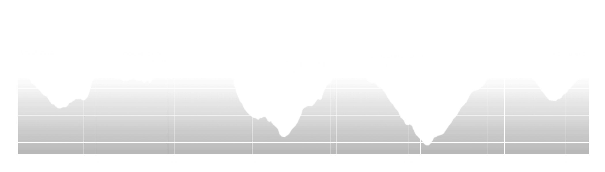

EQUINOX MOON
A tu, que t’agrada córrer de nit entre el silenci i la foscor i a tu, que mai has corregut sota la llum de la lluna, aquesta és la teva cursa. Descobreix la Collserola més salvatge en una cursa increïble on nomes la llum del teu frontal guiarà les teves passes. Gaudeix d’un recorregut apassionant on podràs trobar-te en el silenci dels boscos.
Fitxa tècnica
- Dia d'inici de la cursa: 19 Març 2022
- Horari de sortida: 18:00h
- Zona: Parc natural Serra de Collserola
- Llocs de sortida/arribada: Centre Cívic Vallvidera (Carrer Reis Catòlics, 16)
- Distància real: 15 kms
- Desnivell positiu: 650+
- Material obligatori: Frontal, got o bidó (es prescindiràde gots d’un sol ús).
- Material recomanat: Mòbil carregat, paravent, manta tèrmica.
- Bossa de vida (corredor): No
- Número d’avituallaments (en cursa): 2
- Punt quilomètric avituallaments: Turó de la coscollera, km 4,1. Turó de la coscollera, km 9
- Producte d'avituallaments (Av1 i Av2): Aigua, beguda isotònica. Tot sense gluten
- Avituallament meta: Aigua, pepsi, Isotònic, plàtan, taronja, entrepà de butifarra, amb opció vegana.
- Categories individuals: Absoluta (Femenina i masculina),
- Temps màxim per finalitzar el recorregut: 3h 30min
- Temps aproximat primer corredor: 1h 20min
- Talls horaris (control de pas): Sí. AV2 (km 9) - 20:30
- Hora d’arribada primer corredor: 19:20h
- Hora d’arribada darrer corredor: 21:30h
- Hora d’entrega de premis: 21:30h
- Recorregut senyalitzat amb cinta reflectant d’obra, flextes indicatives, i senyals de perill o precaució